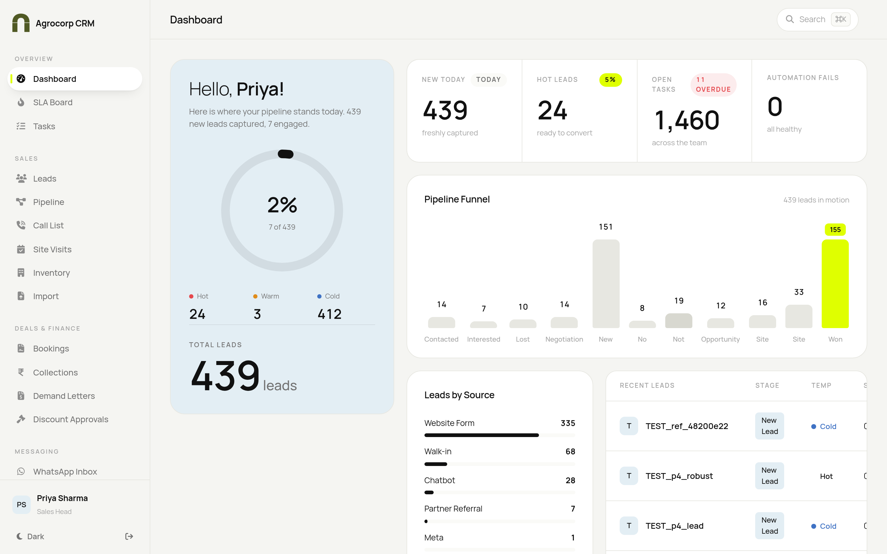
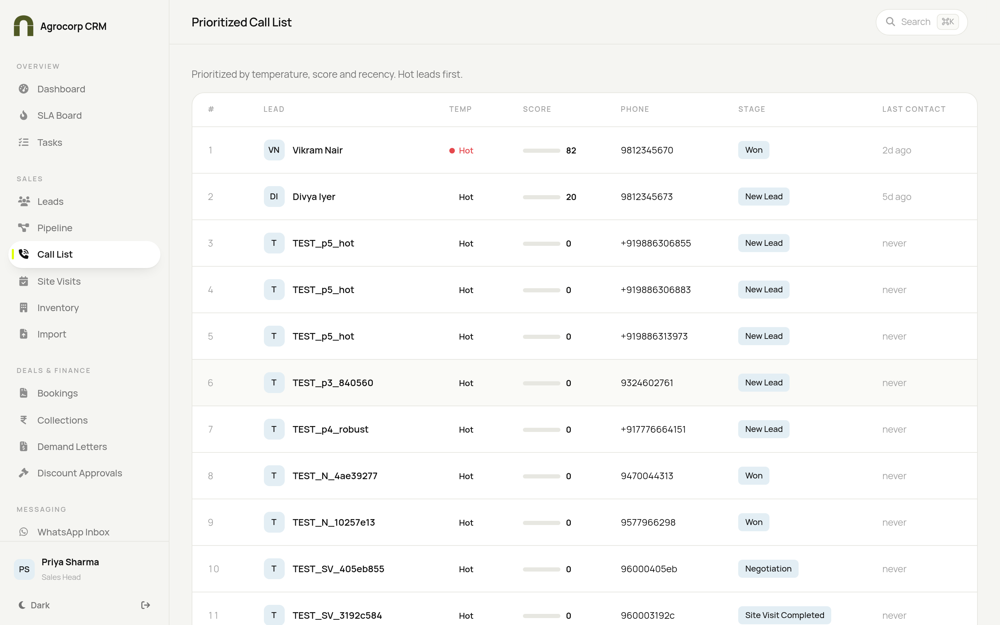
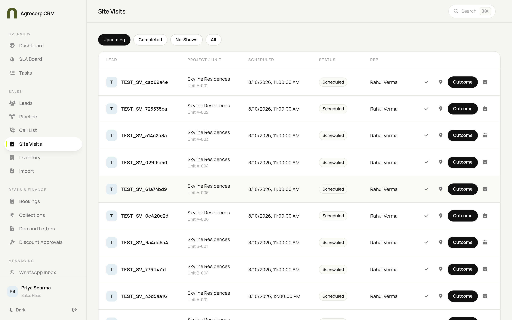
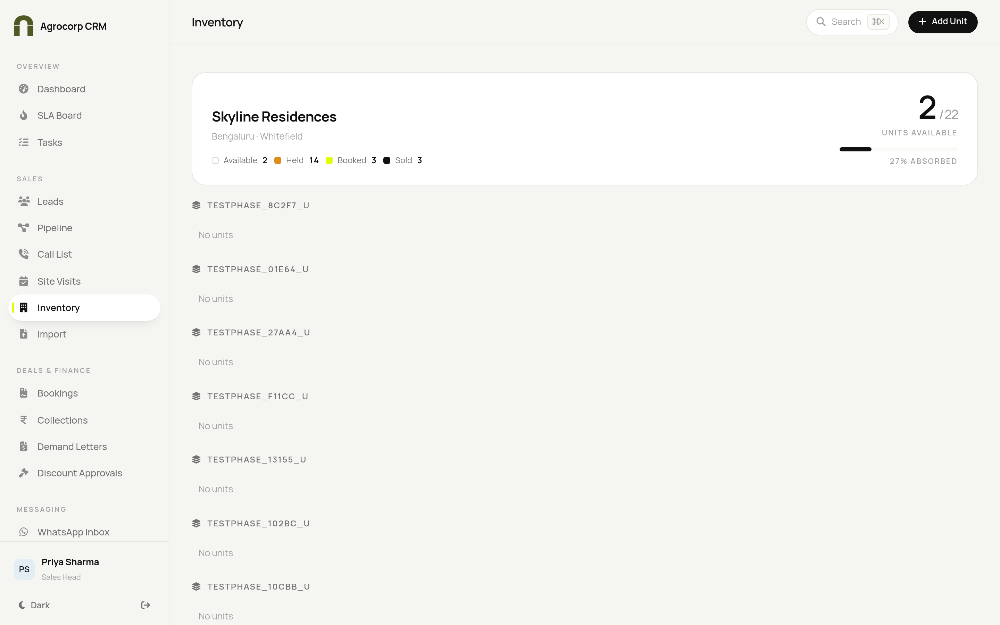
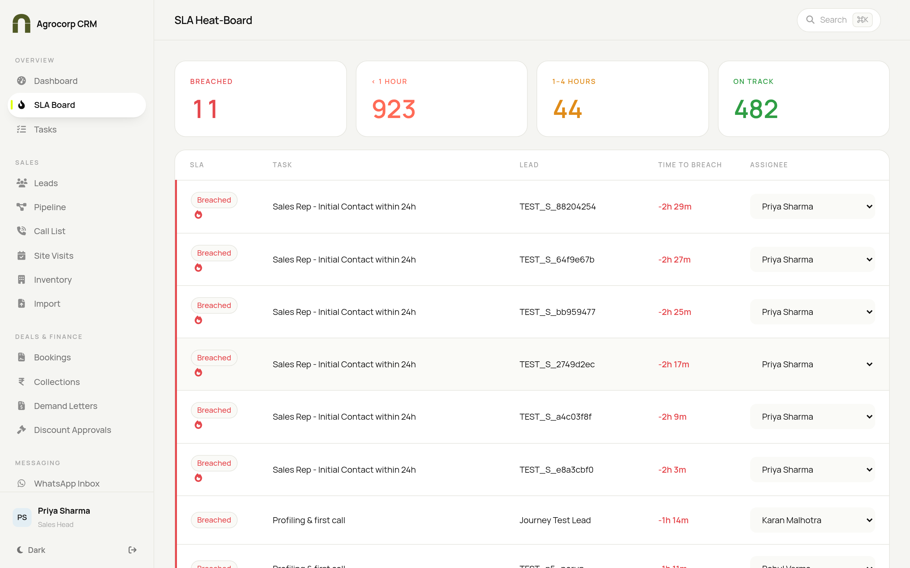
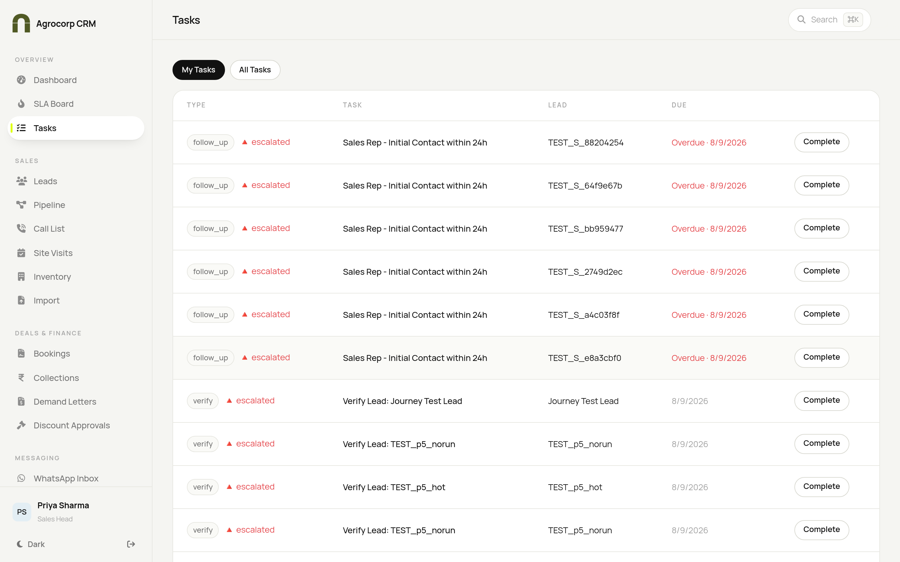
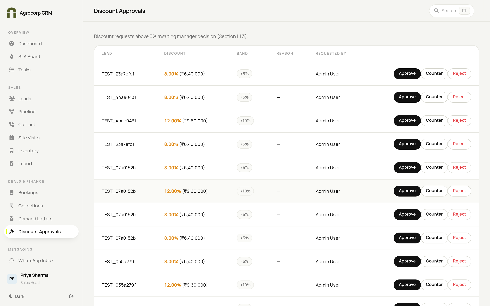

Difference in one line: BDE and BDM work and update leads; the Sales Head additionally approves discounts and can override/delete.
Your home screen — the Sales Cockpit

Sales cockpit — Top Prospects with AI summaries, the Lead Flow Journey map, your week's calendar and pipeline KPIs.
Start every day here. Your dashboard is a live cockpit built for selling:
Top Prospects — your best leads (highest score and most recently engaged), each with a one-line AI summary of the latest WhatsApp messages and notes, so you know exactly where a customer stands before you call. Click one to open the full lead.
Lead Flow Journey — a railway-style signal map showing how many of your leads sit at each stage, from New Lead through to Won.
Calendar — this week's tasks and site visits; tap any day to see what's on for it.
KPIs & charts — new leads this week, hot leads, open/overdue tasks and conversions, plus a pipeline funnel, a 14-day trend and your top lead sources.
A BDE sees their own leads; a BDM or Sales Head sees the whole team's book. Then check your Call List and SLA Board so nothing is missed. Press Ctrl/Cmd + K anytime to find a lead by name.
TASK 1 — Add a new lead by hand
The Leads list — search, filter by stage/temperature/source.
Open Sales → Leads.
Click Add lead (top of the page).
Enter the person's name.
Enter their phone number and/or email.
Choose the source (Walk-in, Website, Referral…).
Add their need, budget and preferred location if known.
Click Save.
If someone with the same phone/email already exists, the CRM warns you it's a duplicate — open the existing lead instead of making a second one.
TASK 2 — Find and open a lead
Open Sales → Leads.
Type a name, phone or email in the search box, or use the Stage / Temp / Source dropdown filters.
Click the lead's row to open their detail drawer.
Inside you'll see their profile, activity history, calls, WhatsApp chat and the Journey tab.
The Journey tab shows a live "train track" of where the lead is — which steps are done, which is happening now and what's waiting. It updates on its own.
TASK 3 — Log a call and set the next follow-up
Open the lead (Task 2).
Click Log call (or the phone/activity action).
Choose the outcome (Connected, No answer, Busy…).
Type a short note of what was discussed.
Set the next follow-up date/time so it appears on your task list.
Click Save.
TASK 4 — Work your daily Call List

Prioritised Call List — hot, high-score leads first.
Open Sales → Call List. It is already sorted — Hot and high-score leads first.
Work down the list top to bottom.
Click a row to open the lead, then log the call (Task 3).
Check the Last contact column so you don't call the same person twice in a day.
TASK 5 — Move a lead along the Pipeline
Pipeline board — drag a card to the next stage.
Open Sales → Pipeline.
Find the lead's card in its current column.
Click and hold the card, then drag it to the next stage column and release.
A short confirmation (toast) appears when the stage is updated.
Click a card to open the full lead if you need to add notes.
Temperature dots: each card shows Hot/Warm/Cold so you can prioritise at a glance.
TASK 6 — Schedule a site visit

Site Visits — schedule, remind and record outcomes.
Open Sales → Site Visits (or open the lead and choose Schedule visit).
Pick the lead, project, and date & time.
Click Save — the customer gets a reminder (once messaging is live).
On visit day, use check-in when you arrive and check-out when done (captures location).
After the visit, record the outcome (Interested, Not interested, Reschedule) within 2 hours.
If the customer didn't turn up, mark it a no-show.
TASK 7 — Check unit availability (Inventory)

Inventory — a live map of available, held, booked and sold units.
Open Sales → Inventory.
Read the top summary: Available, Held, Booked, Sold and % absorbed.
Use the legend colours to read the unit map: outline = available, amber = held, lime = booked, black = sold.
Click a unit to see or (if allowed) update its details.
TASK 8 — Stay on top of your tasks and SLAs

SLA Board — what's due, overdue or at risk.
Open Overview → SLA Board each morning to spot anything overdue or at risk.
Open Overview → Tasks to see your personal to-do list.
Click any item to open the related lead and act on it.

Your personal task list.
TASK 9 — Message a customer on WhatsApp
WhatsApp Inbox — conversations, live thread and lead context side by side.
Open Messaging → WhatsApp Inbox.
Pick a conversation from the left list (use All / Mine / Unread to filter).
Read the thread in the middle; the customer's lead details show on the right.
Type your reply at the bottom and send. Use a canned reply to insert a ready-made message.
Click Open full lead on the right to jump to the lead's record.
Note: real sending/receiving works once your Admin connects the company WhatsApp account under Integrations. Until then the inbox runs in demo mode.
TASK 10 — Request or approve a discount

Discount Approvals — requests above 5% waiting on a decision (Sales Head).
If you are a BDE / BDM (requesting)
Open the lead's cost sheet / proposal.
Enter the discount you want to offer.
If it's above 5% (or 10%), the system sends it for approval automatically.
If you are the Sales Head (approving)
Open Deals & Finance → Discount Approvals.
Review each request — discount %, amount and the band (>5% / >10%).
Click Approve, Counter (offer a different figure) or Reject.
The lead journey (how a deal flows)
Lead arrives → duplicate check.
Verify & make first contact on time.
Score & temperature (Hot / Warm / Cold).
Nurture with the right follow-up sequence.
Schedule and complete a site visit.
Build proposal / cost sheet; get discount approval if needed.
Win the deal → booking is created and locked.
Quick answers
Question
Answer
I can't find a lead
Press Ctrl/Cmd+K and type the name, or use the filters on the Leads page.
It won't let me add a lead
It's likely a duplicate — open the existing record instead.
My discount needs approval
Anything above 5% goes to the Sales Head automatically.
 Agrocorp™
Agrocorp™